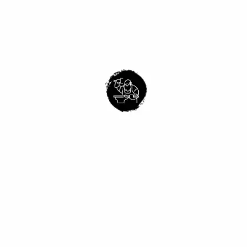

Entrega por sprints
Iteraciones cortas con hitos claros para lanzar valor de negocio de manera continua.
2 a 3 semanas por cicloCreamos plataformas web, sistemas internos y soluciones digitales enfocadas en eficiencia, experiencia de usuario y crecimiento sostenible para tu operacion.

Iteraciones cortas con hitos claros para lanzar valor de negocio de manera continua.
2 a 3 semanas por cicloDiseños preparados para crecer, con integraciones limpias y enfoque en mantenimiento.
Frontend + Backend + APIValidamos rendimiento, seguridad basica y trazabilidad para una operacion estable.
Testing + monitoreoDefinimos alcance, objetivos y prioridades para iniciar con base tecnica clara.
Construimos interfaces intuitivas orientadas a conversion y facilidad de uso.
Implementamos modulos, APIs y automatizaciones conectadas con tus procesos.
Validamos calidad, rendimiento y acompanamos mejoras por iteraciones.
Disenamos y construimos software funcional que aporta valor desde el primer release.